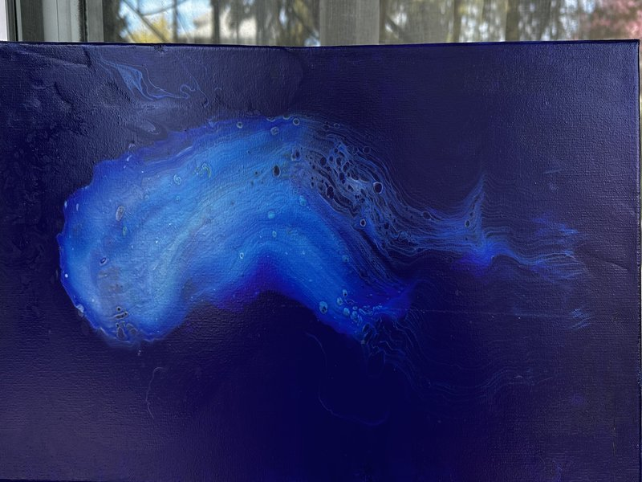

Dutch Pour · Arteza Metallics
I was going for a comet. The paint had other ideas.

Azteca Ultramarine Blue on canvas · Arteza metallic blues with silicone oil · Dutch pour
The setup
Azteca Ultramarine Blue is not a well-behaved paint. It is one of the heaviest pigments in the Arteza line — dense enough to sink through lighter colors, semi-transparent enough that what lives underneath shows through. That combination of weight and translucency is what makes it interesting. Most painters use it as an accent. I used it as both the ground and the top layer, and let it do what it wanted in between.
The background is non-metallic Azteca Ultramarine poured as a fluid base across the whole canvas. Not a dried layer — a wet one. Dutch pour works fluid on fluid. What comes next needs something to float on, to move through.
The layers
The Dutch pour doesn’t use a cup flip or a swipe. The colors go directly onto the wet canvas in a puddle, layered one at a time. The sequence matters because the sequence is physics.
The air and the torch
The hairdryer runs on cool and low. No heat — heat can skin the surface and trap what you want released. At low speed the paint moves as one mass first, then begins to differentiate. The lighter metallics peel away at the edges. The Ultramarine, being heavier, holds center while the others trail. A straw comes in for fine work: directing a specific edge, opening a shape that’s almost right into something that is.
The paint moves as one puddle, then it begins to settle. That’s the moment — when it stops being a mass and starts being a composition.
The torch is a separate pass. Six inches from the canvas, five-second sweeps. It pops the air bubbles that form during pouring, increases cell generation by temporarily changing the paint’s viscosity, and encourages the paint to move within itself one more time. More bubbles visible: another pass. The torch runs on every piece — it’s not finishing, it’s part of the making.
What happened
I wanted a comet — a fast, directed thing moving through dark space. What arrived was slower and stranger. The Ultramarine settled into a central mass with a trailing edge, but the shape reads as biological rather than astronomical. A nudibranch, maybe: a sea creature, electric blue, lit from within, trailing edges dissolving into the dark field around it.
The dark field and the central form are the same paint. Non-metallic Ultramarine as the base, Ultramarine again on top of the puddle. The same color behaving differently because of where it was in the sequence, what it had to move through, what the air did to it. The semi-transparency of the pigment means the metallic layers underneath are still visible in the finished piece — you can see the structure of how it was built, not just the surface.
I called it Bioluminescent. It feels right.
The leftover
When this pour was finished there was paint left — in the cups, on the palette. Rather than discard it, I did a flip cup on a round canvas: stacked the colors in a cup, inverted it, lifted. Torch pass. The round piece carries the same palette, the same session, the same conversation between pigment and medium. It’s a separate work. But it comes from here.
Fluid pour · Round canvas
Leftover palette
Same session. Same paint. Different outcome.